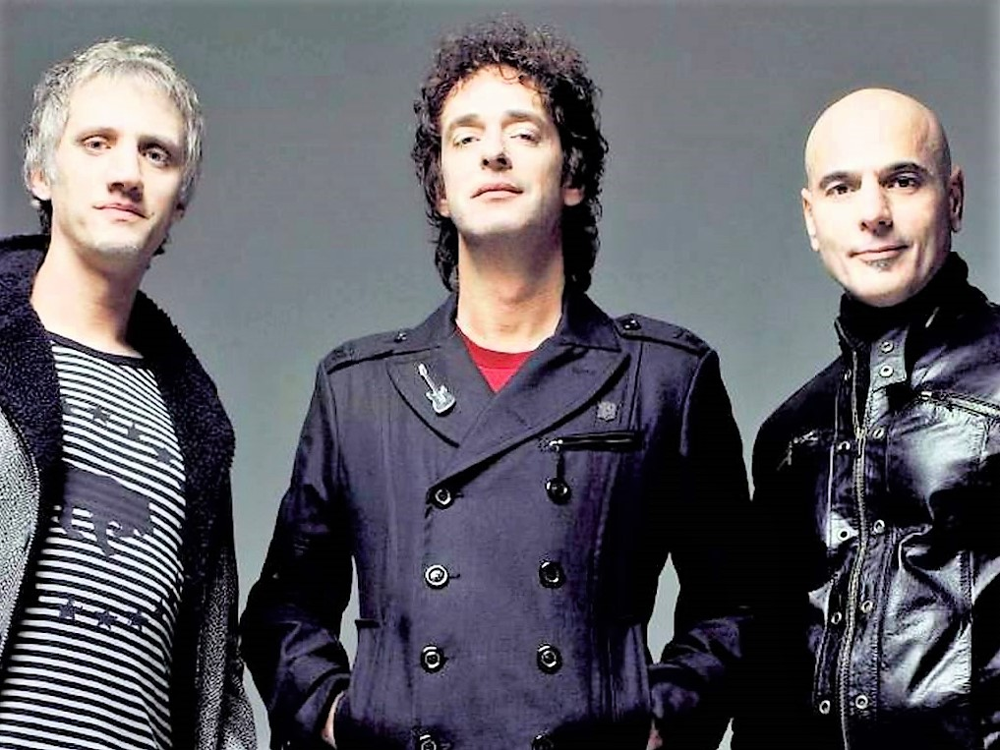

Soda Stereo fue una banda Argentina de rock alternativo formada originalmente en Belgrano, Buenos Aires en 1982
Fue considerada ampliamente por la crítica especializada como la más imporante, popular e influyente banda de rock en español de todos los tiempos y una leyenda de la música latinoamericana. Fueron el primer grupo de habla hispana en conseguir un éxito masivo en Latinoamérica y tuvieron un papel muy importante en el desarrollo y la difusión del rock latinoamericano y el rock en español durante las décadas de 1980 y 1990.
| Año | Álbum |
|---|---|
| 1984 | Soda Stéreo |
| 1985 | Nada Personal |
| 1986 | Signos |
| 1988 | Doble Vida |
| 1990 | Canción Animal |
| 1992 | Dynamo |
| 1995 | Sueño Stéreo |
En 1997, la banda se disolvió por problemas personales y por diferencias de criterios artísticos entre sus integrantes, realizando una gira de despedida terminada el 20 de septiembre de 1997 en el estadio de River Plate, conocido como El último concierto . A mediados de 2007, la banda anunció su regreso para realizar una única gira continental llamada Me verás volver en la que reunió a más de un millón de seguidores, rompiendo varios récords de asistencia y número de conciertos.